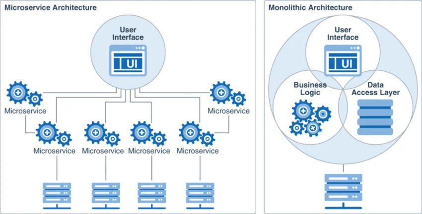

Monolithe vs Microservices
- Scalabilité sélective par service selon la charge
- Réplication ciblée (ex. livestream-service)
- Déploiement indépendant sans redémarrage global
- Pipeline Jenkins + Docker Compose automatisé
- Couplage faible entre services via API REST
- Tolérance aux pannes : un service en panne n'arrête pas la plateforme
- Kafka assure la communication asynchrone
- Polyglotte : NestJS, Python, React selon le besoin
- Maintenabilité simplifiée par codebase réduite
- Équipes autonomes de bout en bout
19 / 34